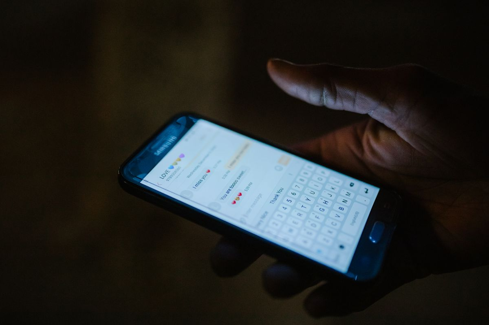

Link
Up
Naija
Events · Tickets · Rides
Tolu
Who's going to the thing on Saturday?
I'm down if others are
Amaka
Same o. Let's see who else
Kelechi
Count me in maybe
AND THAT WAS SATURDAY
Everybody said
maybe
.
Nobody
went
.
Someone has to say yes first. Here you can see who already did.
linkupnaija.com